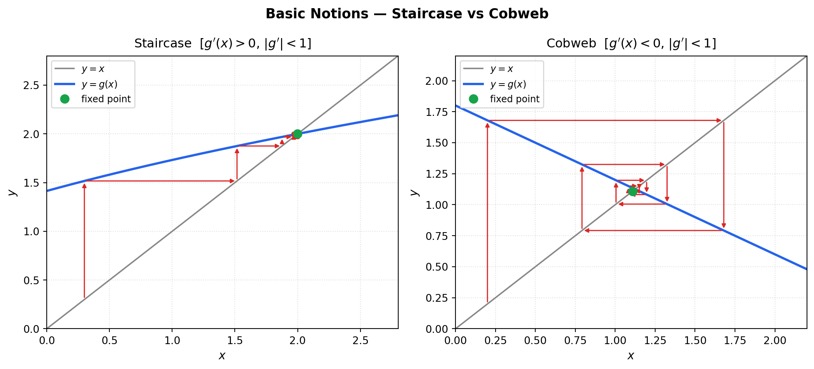
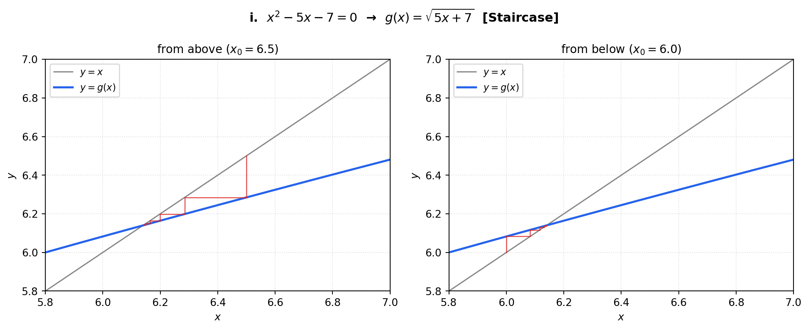
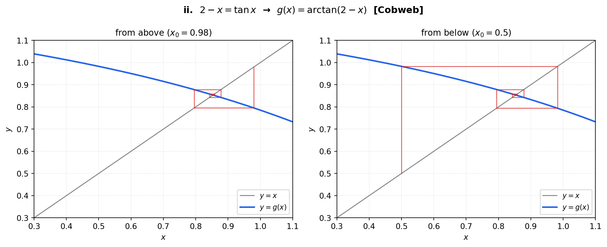
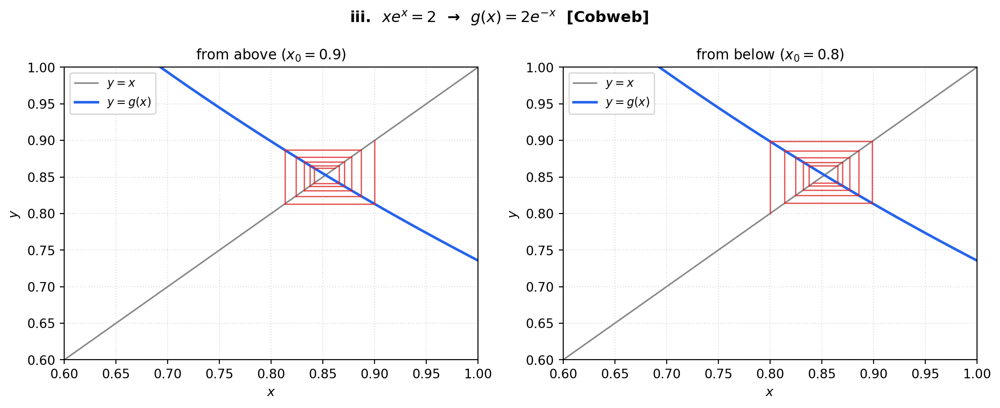

핵심개념 — Numerical Method (Iterative Method)
f(x) = 0의 해를 직접 구하기 어려울 때, x = g(x) 형태로 변환하여 반복(iteration)으로 근사해를 구하는 방법.
y = x와 y = g(x)의 교점이 바로 해(solution).
1. Basic Notions
수렴 패턴
| 패턴 | 설명 |
|---|---|
| Staircase | g(x)가 단조증가할 때 나타남. 수렴 속도가 더 빠름 |
| Cobweb | g(x)가 단조감소할 때 나타남. 진동하며 수렴 또는 발산 |
KEY: Why is y = x assumed?
- iteration이 해로 수렴하거나 무한대로 발산할 수 있음
- Staircase 타입에서 더 빠르게 수렴
2. Standard Procedure (5 Steps)
Step 1 — f(x) 찾기
방정식을 f(x) = 0 형태로 정리한다.
⚠️ Most important but often missing! 문제에서 주어진 식을 그대로 쓰는 게 아니라, 반드시 f(x) = 0 형태로 변형해야 함.
예) \(x^2 - 5x - 7 = 0\) → \(f(x) = x^2 - 5x - 7\)
Step 2 — f(x)로 rough range 찾기 (\(\alpha < x < \beta\))
부호 변환(sign change) 을 보임으로써 대략적인 범위를 확인한다.
조건: \(f(\alpha) \cdot f(\beta) < 0\)
graph sketch를 그려서 확인하는 경우가 많음. 연속함수에서 \(f(\alpha)\)와 \(f(\beta)\)의 부호가 다르면 그 사이에 반드시 근이 존재 (중간값 정리).
Step 3 — x = g(x) 형태로 변환
f(x) = 0을 x = g(x) 형태로 변환한다.
TIP: 여러 g(x)가 가능할 때 — 수렴 조건 확인 필수!
수렴하는 g(x)를 선택해야 함: \[|g'(x)| < 1 \quad \text{in the interval } (\alpha, \beta)\]
- \(|g'(x)| < 1\) → 수렴 (converge)
- \(|g'(x)| \geq 1\) → 발산 (diverge)
여러 g(x) 중에서 반드시 이 조건을 만족하는 것을 골라야 iteration이 의미 있음.
Step 4 — Iteration 진행
초기값: \(x_0 = (\alpha + \beta) / 2\) (midpoint, 문제에서 따로 명시 없으면 중점 사용)
반복: \(x_1 = g(x_0),\; x_2 = g(x_1),\; x_3 = g(x_2), \ldots\)
언제 멈춰야 하나? (Stopping Criterion — Heuristic)
문제에서 요구하는 소수점 자리수(decimal place) 기준으로 멈춘다.
| 목표 정확도 | 멈추는 기준 |
|---|---|
| 1 decimal place | \(x_n\)와 \(x_{n-1}\)이 소수점 첫째 자리에서 일치할 때 |
| 2 decimal places | \(x_n\)과 \(x_{n-1}\)이 소수점 둘째 자리에서 일치할 때 |
| n decimal places | 두 연속 iteration 값이 n번째 자리에서 일치할 때 |
문제에서 “correct to 2 decimal places” 등으로 명시하는 경우가 대부분.
Step 5 — \((\alpha', \beta')\) 범위에서 f(x)에 대입하여 답 확인 ★★★
iteration을 통해 더 좁은 범위 \(\alpha' < x < \beta'\) 를 얻었으면, 반드시 \(\alpha', \beta'\)를 f(x)에 대입하여 부호 변환을 다시 확인해야 함.
조건: \(f(\alpha') \cdot f(\beta') < 0\)
⚠️ 이 마지막 step을 빠뜨리면 안 됨!
iteration 결과가 “진짜 근”을 포함하는 구간임을 수학적으로 정당화하는 단계. iteration 값 자체가 답이 아니라, 그 값을 경계로 하는 구간 안에 근이 있음을 f(x)로 검증해야 완성.
즉, 이 step은 단순히 계산 확인이 아니라 정확도(degree of accuracy)를 justify하는 과정.
3. KEY 요약
- 수치해석은 정확한 해를 주지 않는다. 항상 근사 구간을 좁혀가는 것.
- 전체 과정의 목적: rough interval \(\alpha < x < \beta\) → accurate interval \(\alpha' < x < \beta'\)
- Step 5의 sign change 확인이 없으면 답이 완성되지 않은 것.
- 문제는 위 5단계 순서를 따라 풀어야 함.
4. 연습 예제 — Worked Examples
세 문제 모두 Standard 5-Step Procedure를 따라 풀이함.
i. \(x^2 - 5x - 7 = 0\)
Step 1 — f(x) 찾기
\[f(x) = x^2 - 5x - 7\]
Step 2 — rough range 찾기
정수값에서 부호 확인:
| \(x\) | \(f(x)\) |
|---|---|
| 6 | \(36 - 30 - 7 = -1 < 0\) |
| 7 | \(49 - 35 - 7 = 7 > 0\) |
\[f(6) \cdot f(7) = (-1)(7) < 0 \quad \Rightarrow \quad 6 < x < 7\]
(양수 근 기준. 음수 근은 \(-2 < x < -1\) 구간에 존재.)
Step 3 — x = g(x) 찾기
후보 1: \(x = \dfrac{x^2 - 7}{5}\) → \(g'(x) = \dfrac{2x}{5}\), \(g'(6) = 2.4 > 1\) ✗ 발산
후보 2: \(x = \sqrt{5x + 7}\) → \(g'(x) = \dfrac{5}{2\sqrt{5x+7}}\), \(g'(6) \approx 0.411 < 1\) ✓
따라서 \(g(x) = \sqrt{5x + 7}\) 사용.
Step 4 — Iteration (초기값 \(x_0 = 6.5\))
\[x_1 = \sqrt{39.5} \approx 6.285, \quad x_2 \approx 6.199, \quad x_3 \approx 6.164\] \[x_4 \approx 6.150, \quad x_5 \approx 6.144, \quad x_6 \approx 6.141, \quad x_7 \approx 6.140\]
소수점 둘째 자리 수렴 → \(x \approx 6.14\)
Step 5 — f(x)로 검증 ★★★
\[f(6.14) = (6.14)^2 - 5(6.14) - 7 \approx -0.0004 < 0\] \[f(6.15) = (6.15)^2 - 5(6.15) - 7 \approx 0.073 > 0\] \[f(6.14) \cdot f(6.15) < 0 \quad \checkmark \quad \therefore\; 6.14 < x < 6.15\]

ii. \(2 - x = \tan x \quad (-\pi/2 < x < \pi/2)\)
Step 1 — f(x) 찾기
\[f(x) = \tan x + x - 2\]
Step 2 — rough range 찾기
| \(x\) | \(f(x)\) |
|---|---|
| 0 | \(-2 < 0\) |
| 1 | \(\tan 1 + 1 - 2 \approx 0.557 > 0\) |
\[f(0) \cdot f(1) < 0 \quad \Rightarrow \quad 0 < x < 1\]
Step 3 — x = g(x) 찾기
\[\tan x = 2 - x \;\Rightarrow\; x = \arctan(2 - x)\]
\[g'(x) = \frac{-1}{1+(2-x)^2}, \quad |g'(x)| \leq \frac{1}{1+1} = 0.5 < 1 \quad \checkmark\]
Step 4 — Iteration (초기값 \(x_0 = 0.5\))
\[x_1 \approx 0.9828, \quad x_2 \approx 0.7954, \quad x_3 \approx 0.8745\] \[x_4 \approx 0.8439, \quad x_5 \approx 0.8560, \quad x_6 \approx 0.8513, \quad x_7 \approx 0.8532\]
소수점 둘째 자리 수렴 → \(x \approx 0.85\)
Step 5 — f(x)로 검증 ★★★
\[f(0.85) = \tan(0.85) + 0.85 - 2 \approx -0.012 < 0\] \[f(0.86) = \tan(0.86) + 0.86 - 2 \approx 0.022 > 0\] \[f(0.85) \cdot f(0.86) < 0 \quad \checkmark \quad \therefore\; 0.85 < x < 0.86\]

iii. \(xe^x = 2\)
Step 1 — f(x) 찾기
\[f(x) = xe^x - 2\]
Step 2 — rough range 찾기
| \(x\) | \(f(x)\) |
|---|---|
| 0 | \(-2 < 0\) |
| 1 | \(e - 2 \approx 0.718 > 0\) |
\(f(0) \cdot f(1) < 0 \Rightarrow 0 < x < 1\). 더 좁히면:
| \(x\) | \(f(x)\) |
|---|---|
| 0.8 | \(0.8 e^{0.8} - 2 \approx -0.220 < 0\) |
| 0.9 | \(0.9 e^{0.9} - 2 \approx 0.214 > 0\) |
\[\Rightarrow \quad 0.8 < x < 0.9\]
Step 3 — x = g(x) 찾기
\[xe^x = 2 \;\Rightarrow\; x = 2e^{-x}\]
\[g'(x) = -2e^{-x}, \quad |g'(0.8)| = 2e^{-0.8} \approx 0.899 < 1 \quad \checkmark\]
Step 4 — Iteration (초기값 \(x_0 = 0.85\))
\[x_1 \approx 0.8549, \quad x_2 \approx 0.8526, \quad x_3 \approx 0.8536\] \[x_4 \approx 0.8532, \quad x_5 \approx 0.8530, \quad x_6 \approx 0.8530\]
소수점 셋째 자리 수렴 → \(x \approx 0.853\)
Step 5 — f(x)로 검증 ★★★
\[f(0.852) = 0.852\, e^{0.852} - 2 \approx -0.003 < 0\] \[f(0.853) = 0.853\, e^{0.853} - 2 \approx 0.002 > 0\] \[f(0.852) \cdot f(0.853) < 0 \quad \checkmark \quad \therefore\; 0.852 < x < 0.853\]

5. 요약 비교
| 문제 | \(g(x)\) | \(g'(x)\) 부호 | 수렴 패턴 | 근 |
|---|---|---|---|---|
| \(x^2 - 5x - 7 = 0\) | \(\sqrt{5x+7}\) | \(+\) | Staircase | \(6.14 < x < 6.15\) |
| \(2 - x = \tan x\) | \(\arctan(2-x)\) | \(-\) | Cobweb | \(0.85 < x < 0.86\) |
| \(xe^x = 2\) | \(2e^{-x}\) | \(-\) | Cobweb | \(0.852 < x < 0.853\) |
Cobweb vs Staircase: \(g'(x) > 0\) → Staircase, \(g'(x) < 0\) → Cobweb